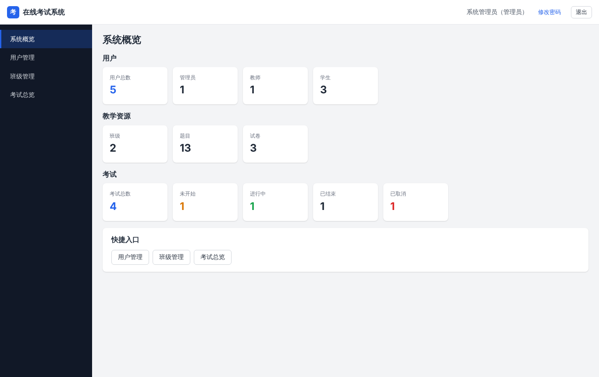
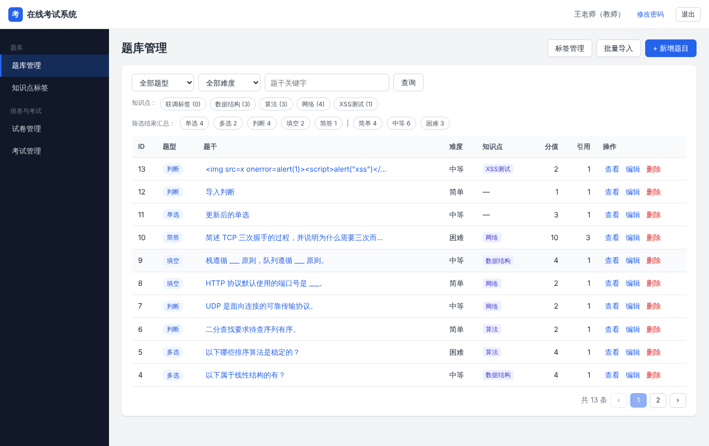
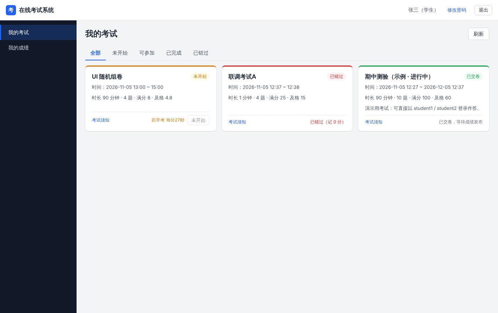
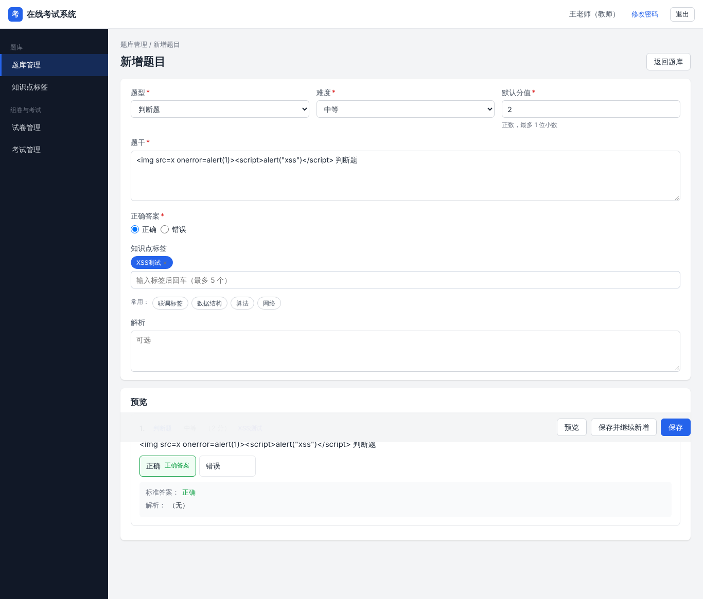
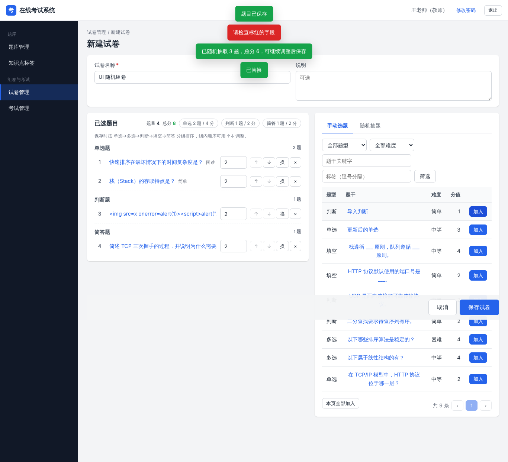
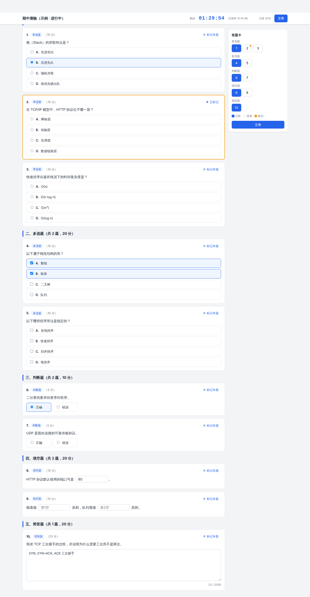
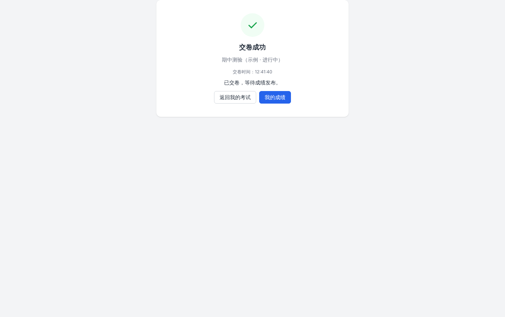
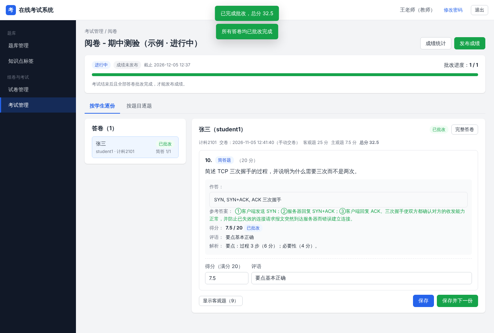
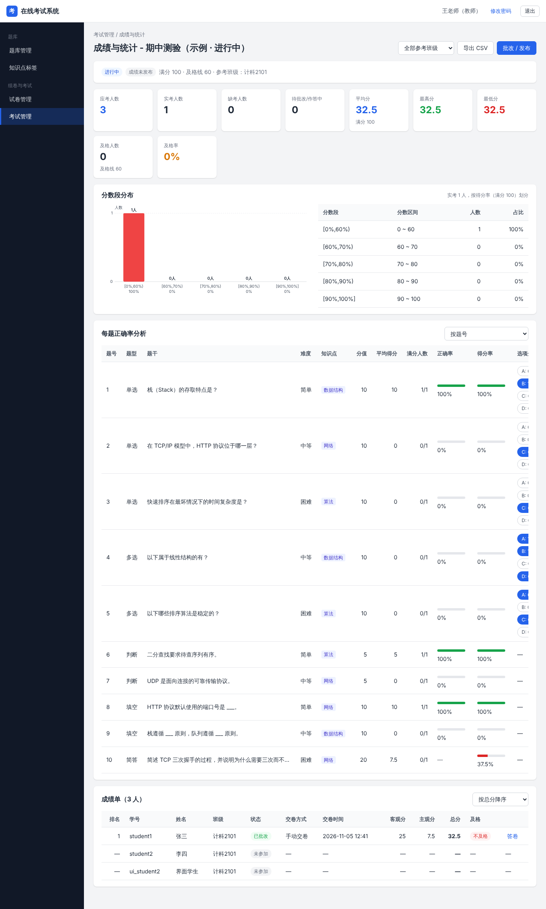

| 层面 | 选型 | 理由 |
|---|---|---|
| 运行时 | Node.js ≥ 18，ES Module | 内置 http / crypto / fs / test，覆盖全部需要 |
| 第三方依赖 | 零依赖 | 无需 npm install，npm start 一条命令启动；无供应链风险 |
| Web 框架 | 自研轻量路由（约 100 行） | 方法 + 路径参数 + 角色声明即可，关键代码可自主讲解 |
| 存储 | JSON 文件 + 仓储层 | 需求规模可全量驻留内存；预留 MySQL 8 DDL 与迁移方案 |
| 鉴权 | scrypt + 服务端会话 | 慢哈希抗爆破；会话可即时吊销（JWT 做不到） |
| 前端 | 原生 JS SPA + hash 路由 | 无构建、无框架、无 CDN；首屏可控 |
| 测试 | node --test + 覆盖率 | 内置能力，零依赖 |
{code, message, data} + 业务错误码db.json 全量驻留内存，查询为内存遍历.tmp → fsync → rename；文件损坏则拒绝启动，保护原数据STORAGE 配置，DDL 已给出






| 题型 | 判分规则 |
|---|---|
| 单选 / 判断 | 与答案一致得满分 |
| 多选 | 完全一致才得满分；少选、多选、错选均 0 分 |
| 填空 | 逐空比对，去首尾空格、忽略大小写；分值按空拆分，合计恒等于总分 |
| 简答 | 教师按人 / 按题人工给分并写评语 |
全部批改完成且考试结束后才能发布成绩；发布后可撤回。


| 威胁 | 措施 |
|---|---|
| 密码泄露 / 爆破 | scrypt 慢哈希 + 16 字节独立盐 + 常量时间比较；5 次错误锁定 10 分钟 |
| 令牌窃取 / 伪造 | 32 字节随机令牌，库内仅存 SHA-256；空闲 2h 过期；退出 / 改密 / 禁用立即失效 |
| 越权 | 路由 RBAC（40300）+ 服务层资源归属校验（40301）两级 |
| 答案泄露 | 学生作答接口白名单字段，不含答案解析；成绩发布前分数为空 |
| XSS | 前端只用 textContent 渲染 + 严格 CSP（default-src 'self'） |
| 其他注入 | 字段级输入校验、请求体 ≤1MB、静态文件防路径穿越、CSV 导出防公式注入 |
数据规模：1000 用户 · 2000 题 · 102 场考试 · 5000 答卷 · 25000 条作答
| 指标 | 要求 | 实测 | 结论 |
|---|---|---|---|
| 普通查询平均响应 | ≤ 300ms | 1.7 ~ 12.3ms | 通过 |
| 统计接口平均响应 | ≤ 1s | 2.3 ~ 3.5ms | 通过 |
| 200 并发保存 / 交卷 | 成功率 100%、无丢失 | 100%，逐份核对一致；P95 1240.1 / 1358.4ms | 通过 |
| 100 并发登录 | 记录 P95 | 全部成功，P95 1223.3ms（scrypt 慢哈希代价） | 记录 |
| 首屏资源 / 可交互 | ≤ 300KB / ≤ 2s | 75.6KB / 134ms | 通过 |
已完成
不足与展望
恳请批评指正 · 接下来进行约 5 分钟系统演示